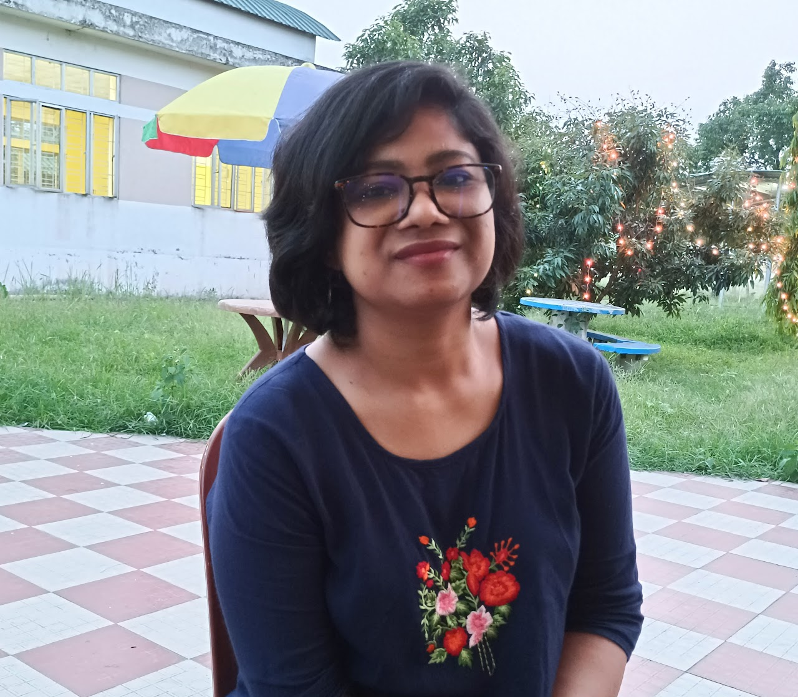
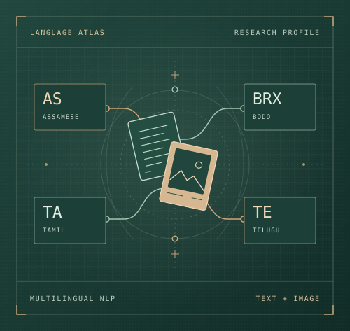

Language resources & cross-lingual transfer
I develop datasets for underrepresented languages such as Assamese and Bodo and test how well models trained in one language transfer to another.
Postdoctoral Researcher
Multilingual NLP & responsible AI
I build language resources and study how models identify and mitigate online harm in underrepresented languages across text, images, audio, and video.

01 Academic profile
I conduct postdoctoral research at the University of Hildesheim, Germany. I am also an Assistant Professor at SRM Institute of Science and Technology (SRM IST), Kattankulathur, India, where I am currently on leave. My teaching in the Department of Networking and Communications, School of Computing, has included Programming for Problem Solving.
I earned my PhD in Computer Science and Engineering at Central Institute of Technology Kokrajhar (CITK), specializing in natural language processing. My doctoral research focused on detecting and mitigating hate speech in low-resource Indian languages.
At the Indian Statistical Institute, Kolkata, I worked on degraded document recognition, multilingual and multimodal AI, explainable AI, agricultural applications, and anticancer drug potency prediction.
My work has appeared at ICPR and PACLIC and in Pattern Recognition Letters, Communications Chemistry, and Natural Language Processing (formerly Natural Language Engineering).
Outside academia, I write poetry.
02 Research
I develop datasets for underrepresented languages such as Assamese and Bodo and test how well models trained in one language transfer to another.
I study how to identify hate speech, explain which words influence a model’s decision, and reduce the intensity of hateful language while preserving meaning.
I use controlled changes to text, memes, audio, and video to test which cues drive a model’s judgments about harmful content.
I benchmark deep learning models for predicting anticancer drug potency and examine how well they generalize to compounds and cell lines absent from training.
Read the studyIn ViFaPi, I study how plant species recognition transfers across herbarium specimens, historical botanical illustrations, and modern photographs. My agricultural imaging work also includes identifying root-knot nematode species.
Explore ViFaPi
03 Scholarly work
Pattern Recognition Letters
Communications Chemistry
FIRE · ACM Proceedings
Natural Language Processing · Cambridge University Press
Social Network Analysis and Mining
FIRE · Working Notes
Scalable Computing: Practice and Experience
PACLIC · ACL Anthology
ICPR · IEEE Proceedings
04 Projects & service
Workshop co-organizer · ACL 2027
Shared task organizer
I co-organized HASOC shared tasks from 2023 to 2026. The meme editions evaluated hate speech and offensive content detection in Bangla, Hindi, Gujarati, and Bodo in 2025, and in Tamil and Telugu in 2026.
Collaborative research
A pipeline that detects hateful text, identifies the terms contributing to the hate intensity, and suggests context-aware replacements. We evaluated it on social media text in five Indic languages.
University research project
ViFaPi applies computer vision to historical botanical materials. My work examines how plant recognition models generalize across herbarium sheets, printed illustrations, and modern photographs.
05 Contact
For research collaborations or questions about my papers and datasets, please email me.